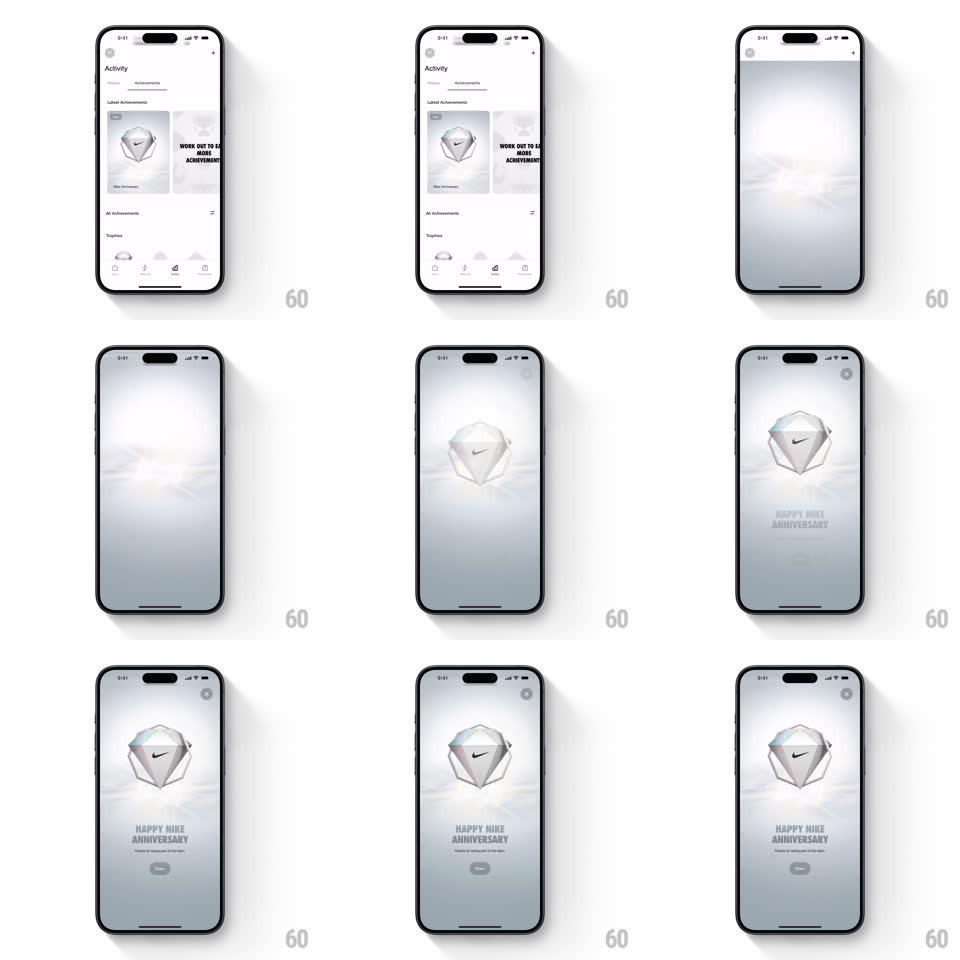

Media
Frame-by-frame

Rebuild this interaction 1:1: Nike Training Club's achievement reveal - tapping a badge card expands it full-screen into a misty void where a 3D iridescent gem badge floats up and rotates, followed by staggered title, caption, and button.

Rebuild this interaction 1:1: Nike Training Club's achievement reveal - tapping a badge card expands it full-screen into a misty void where a 3D iridescent gem badge floats up and rotates, followed by staggered title, caption, and button. ## Integration Integration: stack-agnostic spec - springs given as stiffness/damping, timed motions as duration + curve; map every value to your framework and animation library of choice. ## Scene Activity > Achievements list with badge cards; the expanded state: a soft white-gray mist background, the faceted gem badge (iridescent stone, black swoosh in a frosted center facet) floating center, "HAPPY NIKE ANNIVERSARY" in spaced gray capitals below, a small caption line, a pill button, X top-right. ## Motion spec Pattern: full-screen hero expansion with 3D float. - Tap: the card's badge image hero-expands - background dims/mists over (300ms), and the badge travels from its card position to center while scaling up (~450ms, ease-out), slight rotate (~8 deg) settling flat. - Once centered, the badge idles in 3D: slow continuous rotation with a gentle float (translateY +-8px, 3s sine) and facet glints sweeping as it turns. - Text staggers in below: title first (fade + rise 14px, 350ms), caption 120ms later, button 150ms after that (fade + scale 0.95 -> 1). - Close: the sequence reverses - text out fast (150ms), badge flies back into its card. ## Calibration - The mist is a soft radial vignette, not a flat dim - edges darker than center. - The badge is the only saturated element; keep everything else near-monochrome. ## Reduced motion Badge crossfades to center; no rotation or float. ## Don't miss - The badge must read as physical glass: refraction glints on facet edges as it turns, not a flat PNG spin. - The expansion is a shared-element move - the badge never disappears and reappears.